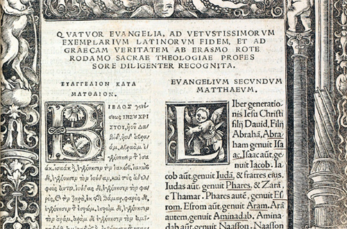
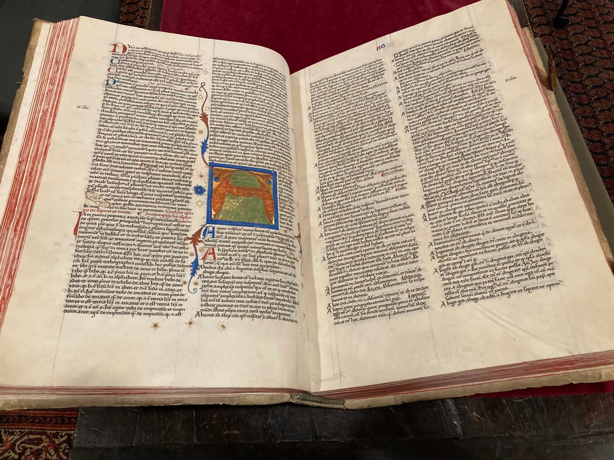
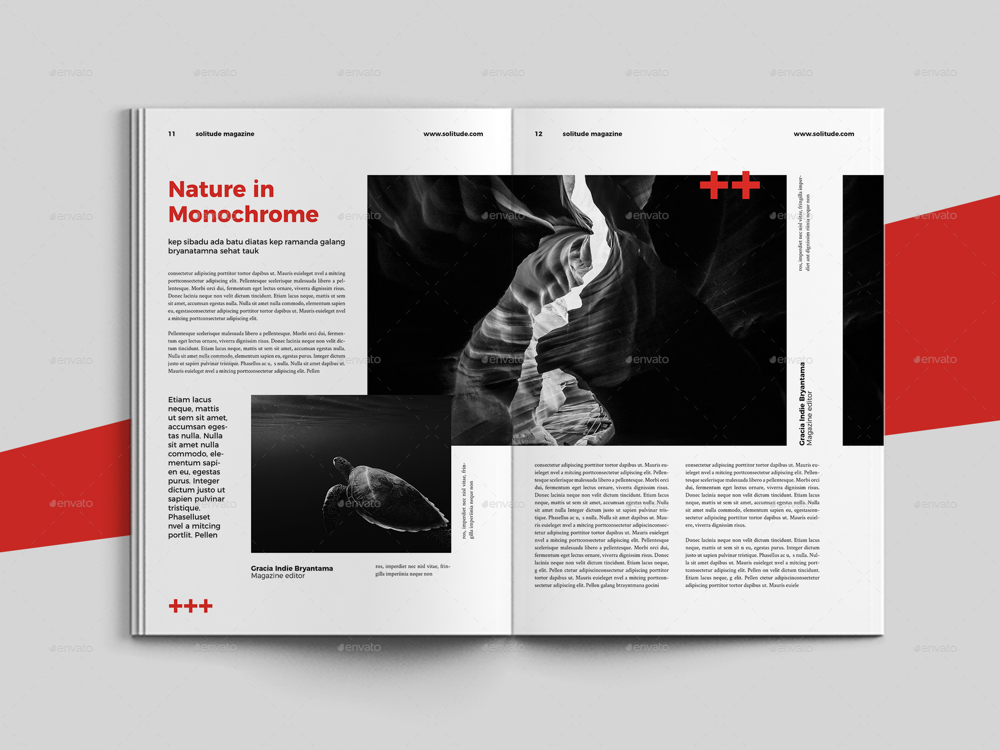

Welcome to the very first stop — and the oldest stones of the entire journey.
Itálica was founded in 206 BCE by Scipio for veterans of the Battle of Ilipa... (Fallback Text)
Select Edition:
LMML Live Museum of Movie Locations · Seville
Historical Timeline · Stop 1 of 15
Game of Thrones — The Dragon and the Wolf (2017)
Welcome to the very first stop — and the oldest stones of the entire journey.
Itálica was founded in 206 BCE by Scipio for veterans of the Battle of Ilipa... (Fallback Text)
LMML — Live Museum of Movie Locations (Seville) — is the end-of-course project developed by Sevda Rezaei Melal for the course “Information Modeling and Web Technologies”, taught by Prof. Fabio Vitali in the Master's degree in Digital Humanities and Digital Knowledge at the University of Bologna.
This interactive exhibition bridges the gap between fictional cinematic universes and the tangible architectural heritage of Seville. It reimagines the physical geography of the city through the lens of cinematic history, inviting users to experience urban space as a dynamic, living narrative.
The framework is repeatable by design: a JSON dataset systematically describes each location, its film shots, its adaptive texts, and narrative routings; this interface merely reads and dynamically renders it.
Furthermore, LMML employs a dual-narrative user interface designed to reflect different historical and cultural paradigms. Users can navigate the exhibition through distinct temporal lenses—ranging from the typographic constraints of early modern printing (1500–1800) to the bold, grid-based layouts of late 20th-century news media. This architectural choice is not merely decorative, but a deliberate method to contextualize the data.
GitHub: View Repository
Before establishing the final code structure, I conceptualized and refined the interface directly in the browser. The primary architectural challenge was designing a single layout skeleton capable of simultaneously handling a complex JSON data matrix (2 narratives × 3 user personas × 3 text depths) alongside two radically different visual themes.
Unlike traditional linear websites, I built this project using a multi-dimensional content architecture. I structured the data for each location as a JSON matrix, separating the active storyline from the user's reading profile, while dynamically routing their physical journey.
lmml:textMatrix): I deliberately avoided hardcoding content into the HTML. Instead, the application fetches a JSON object containing a 6-object array for each location. This represents two parallel realities (Historical Timeline vs. Cinematic Fantasy) multiplied by my three core personas (Kids / Adults / Specialists). Within each object, I structured the text in three progressive depth levels (lmml:microText, lmml:summaryText, lmml:detailedText). When a user toggles a Persona Tab or clicks "Read More," my JavaScript dynamically filters and reveals the precise string required, ensuring the interface never breaks the user's active context.
lmml:narrativeRouting): I designed the application to act as a state machine rather than a simple hyperlinked site. The "Next Location" button doesn't have a static URL. Instead, the app consults the lmml:narrativeRouting array. If the user is immersed in the Historical narrative, the router strictly guides them to the next archaeological site. If they switch to the Cinematic narrative, the router seamlessly diverts their path to the next filming location.
To ensure the complex data matrix serves actual user needs rather than becoming a technical gimmick, I designed the interface around two distinct cultural lenses experiencing the exact same geographical space. Crucially, I completely decoupled the narrative context from the visual presentation—meaning a user is never locked into a specific design. They can read a historical timeline in a modern magazine layout, or a cinematic text in an early print style, changing the theme whenever they like.
I designed the application's CSS architecture to act not just as a container, but as a storytelling device itself. I engineered a dual-theme system where both visual paradigms run on a single CSS stylesheet. All colors, typography, and layout behaviors are stored as custom properties (CSS variables) scoped directly to the body tag using [data-theme] attributes. This allows the entire UI to instantly re-render from classical to modern simply by having JavaScript toggle the attribute on the body.
Theme I — Early Print (1500–1800): I created this theme to simulate a historical archive or hand-press manuscript. It features warm rag-paper backgrounds (using the #E0C49F hex value), humanist old-style typography using EB Garamond, rubricated drop capitals, and fully justified text blocks to mimic mechanical movable type.


Theme II — Late XX Century (Swiss Grid): I built this theme to reflect post-war modernism and industrial magazine spreads. It abandons historical classicism for pure coated white backgrounds (#FAFAF7), heavy industrial tracking lines, flush-left rag-right alignment, and a strict neo-grotesque sans-serif font stack (Helvetica, Univers).

I engineered the project as a Single Page Application (SPA) using purely Vanilla HTML, CSS, and JavaScript. There are no build tools (like Webpack), no heavy frameworks (like React or Vue), and no server-side dependencies. I chose this approach to ensure maximum archival longevity, portability, and readability—which are core principles for Digital Humanities projects.
State Management & Persistence: To create a seamless SPA experience, I utilized the browser's native History API (history.pushState and popstate events). My global AppState object tracks the user's active theme, page, narrative, physical location, and persona tone. Whenever a user interacts with the UI, JavaScript updates both the DOM and the browser history simultaneously, ensuring the environment remains tailored to their choices as they navigate the map.
/LMML-Project
├── index.html ← The core SPA (Cover, App, Docs, and Renderer all in one)
├── styles.css ← Unified Design System & Theme Tokens
├── app.js ← State management, matrix routing, and DOM manipulation
└── data/
├── loc_01.json ← JSON-LD matrix (Itálica)
└── loc_02.json ← JSON-LD matrix (Real Alcázar)
Asynchronous DOM Injector: Instead of pre-loading massive HTML files, my app.js handles data fetching asynchronously. When a user arrives at a new stop, the injectLocationData() function fetches the specific JSON file for that location, parsing the data to instantly re-populate the headers, metadata tables, and media carousels.
Independent Routing Logic (NARRATIVES_DATA): I designed the spatial routing to be entirely decoupled from the physical map. For instance, my Historical narrative array contains 15 distinct stops. However, the Cinematic narrative contains only 13 stops. I intentionally dropped two locations from the cinematic route because I curated that specific journey around fictional kingdoms and realms (like Westeros or Naboo); those two omitted films simply did not fit that specific curatorial logic. The JavaScript router handles this asymmetry flawlessly without breaking the "Next / Previous" navigation flow.
In Digital Humanities, content must be as legible to machines as it is to humans. The core of my architecture is a Linked Data model, embedded as application/ld+json within the location files. However, representing my multi-dimensional matrix (narrative paths × personas × text depths) required extending standard semantic vocabularies with my own project-specific ontology.
Wherever possible, I relied on established semantic web standards to ensure interoperability. I structured the overarching location data using standard entities like schema:TouristAttraction and schema:GeoCoordinates. Within the matrix itself, I typed each distinct text block as a schema:CreativeWork, and mapped academic references using schema:citation.
lmml:*)Since Schema.org is excellent for general metadata but lacks the specialized fields required for my Matrix UI, I designed a custom namespace (lmml:) to control the application's logic directly from the metadata.
lmml:textMatrix: The container array holding the 6 distinct persona variations for a single location.lmml:targetNarrative: Binds a specific text block to the global Narrative context (e.g., narrative_1_historical vs. narrative_2_epic).lmml:competence & lmml:tone: Categorizes the persona targeting, mapping the backend logic (e.g., intro+young or adv+scholar) directly to the UI's Kids, Adults, and Specialists tabs.lmml:microText, lmml:summaryText, lmml:detailedText: Controls the progressive disclosure of information. This enables the UI's "Read More" interactions to unfold textual depth dynamically from a single JSON object.Here is how standard and custom vocabularies interlock within a single matrix cell to feed the UI:
{
"@type": "schema:CreativeWork",
"@id": "#txt_long_adv_scholar_hist",
"lmml:targetNarrative": "narrative_1_historical",
"lmml:competence": "adv",
"lmml:tone": "scholar",
"lmml:microText": "A total institution built as fiscal instrument...",
"lmml:summaryText": "The Real Fábrica de Tabacos is the Enlightenment's answer...",
"lmml:detailedText": "The result was commonly ranked the largest building...",
"schema:citation": [
{ "@id": "#src_gordillo" }
]
}
This project serves as an open ledger of my intellectual labor. As the sole developer of LMML, the following section clarifies the strict boundaries between my original human authorship and my utilization of Large Language Models (LLMs) as technical assistants.
The core intellectual, narrative, and architectural decisions of this project are strictly my own. I did not use AI to generate the substance of the museum:
lmml:textMatrix and lmml:narrativeRouting.I strictly employed AI as a syntax compiler, text refiner, and technical co-pilot to help translate my logic into the final output:
The purpose of this web site is to explore various types of typographic and layout style for specialized tourist visits, as an end-of-course project for the "Information Modeling and Web Technologies" course of the Master's Degree in Digital Humanities and Digital Knowledge of the University of Bologna, under the supervision of prof. Fabio Vitali.
The documents contained in this web site have been selected for their length and complexity from publicly available film databases, archaeological archives, and geographic services. Their publication here is not intended to be an alternative to or a replacement for their original locations:
Copyright and related rights on the content remain with their original owners. Copyright on the typographic and layout choices are 2026 © Sevda Rezaei Melal.
All film titles, stills and episode references remain the property of their respective rights holders and are referenced for academic commentary only; film frames are cited, not reproduced. Photographs by the LMML team are released under CC BY 4.0. Historical photographs are in the public domain via the archives credited in each location's metadata.